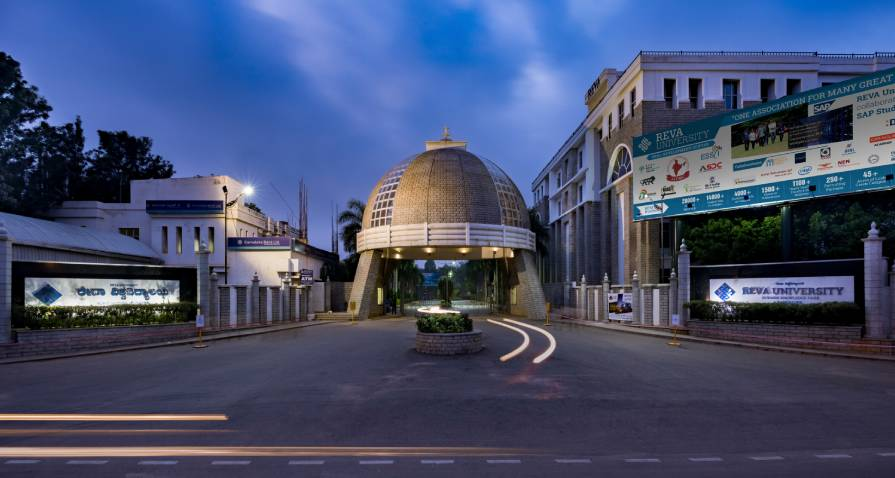
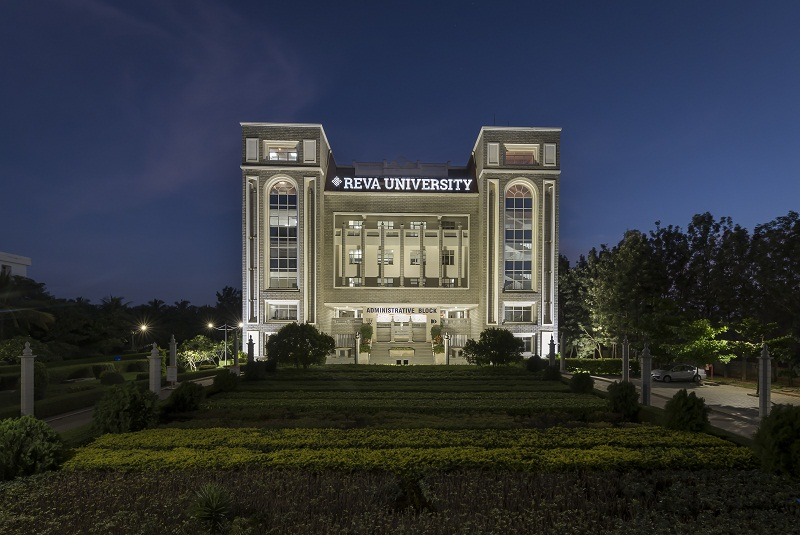

> 10+2 - Narayana School, Durgapur.

= I Satinder Singh Sall have completed my 10th standard from Narayana School, Durgapur on 2020. (not a carona batch, all the
exams were sucessfully attempted by me) I have studied Science + Maths with Computer Science in my 10+2 at
Narayana School, Durgapur, my 10+2 was complited on 2022.
> UnderGraguation - REVA University, Bangalore.
 = I have complited my undergrauation in Computer Science and Applications from REVA University, Bangalore.
My UnderGraguation duration was of 3 years - from 2022 to 2025.
> PostGraguation - REVA University, Bangalore.

=I have complited my postgraguation in Computer Science and Applications from REVA University, Bangalore.
My PostGraguation duration was of 2 years - from 2025 to 2027.
Please follow this link given - Experiances?
To contact me use the link provided - Contact Me.